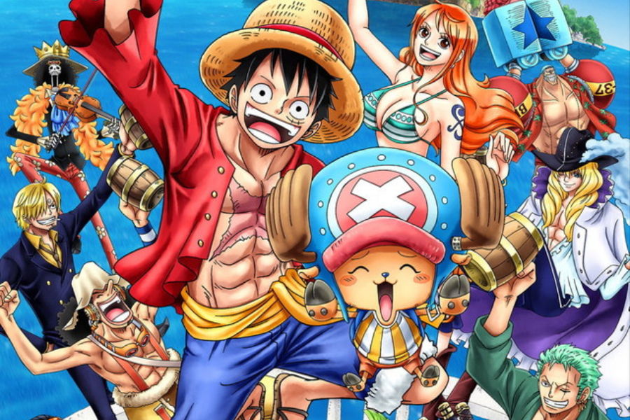
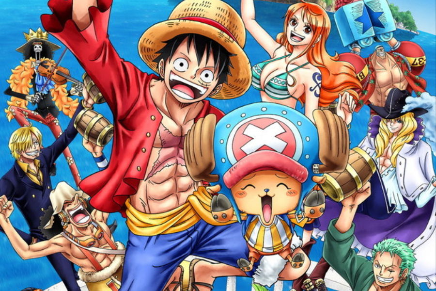
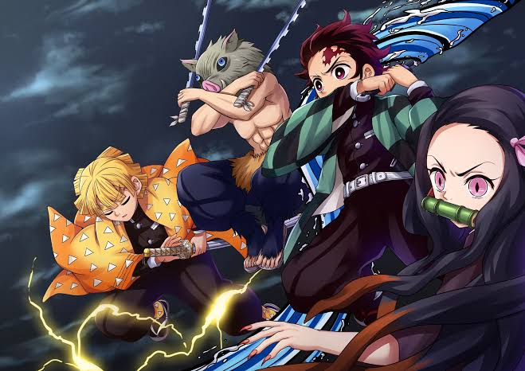
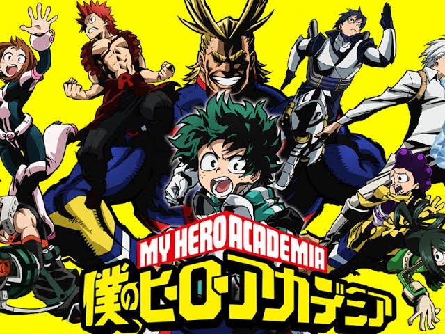

ONE PIECE
Score 9.0
Follows the adventures of Monkey D. Luffy and his pirate crew in order to find the greatest treasure ever left by the legendary Pirate, Gold Roger. The famous mystery treasure named "One Piece".
Here you can found reviews of the best animes taht you could watch,everyone with description , a little personal opinion about that series.Here will we know the good or bad and finally based on this a score on a scale to 10.
Score 9.0
Follows the adventures of Monkey D. Luffy and his pirate crew in order to find the greatest treasure ever left by the legendary Pirate, Gold Roger. The famous mystery treasure named "One Piece".
Score 8.5
A family is attacked by demons and only two members survive - Tanjiro and his sister Nezuko, who is turning into a demon slowly. Tanjiro sets out to become a demon slayer to avenge his family and cure his sister.
Score 8.0
In a world populated with superhumans, the superhero-loving Izuku Midoriya is without power. However, after the Quirkless dreamer Izuku inherits the powers of the world's best superhero, All Might, his hopes of becoming the top hero are now possible.